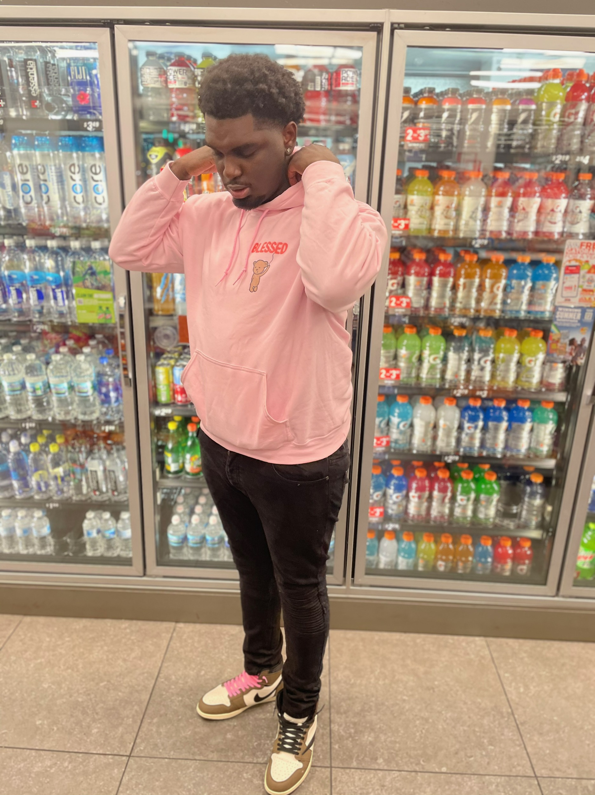

About Me
Hello, my name is Ifeanyi Ozonwankwo, and I am currently a third year Undergraduate Student at Illinois State University. At Illinois State University I am pursuing a degree in Creative Technologies: Interdisciplinary Technologies, where I plan on using my degree to pursue a Graduate’s degree in Creative Technologies. I would then like to pursue my lifelong dream of becoming a User Experience Designer (UX), or a Graphic Designer for major corporations such as Apple, Microsoft, Tesla and more.
What inspired me to go into Creative Technologies
Growing up during the rise of the social media era, I was always fascinated by photoshop and how it allowed people to present their creative ideas and talent. Music videos such as Kanye West’ Good Life and Heartless ,or Kyle’s I SPY presented some of my favorite animations during my childhood. These experiences helped inspire my lifelong dream of working in the Creative Technology field, and becoming either a UX designer or Graphic Designer.
My experiences
During my time at Illinois State University I have been given the opportunity to take classes regarding material that I would later apply in my career. Certain classes like Web Design & Development (CKT 301/404), Motion Graphics (CTK 377), and Sound Design (CKT 240) have all broadened my horizons when it comes to different aspects that are used in Creative Technologies. Additionally, it has helped me realize what I enjoy the most, and also what I don’t like as much.